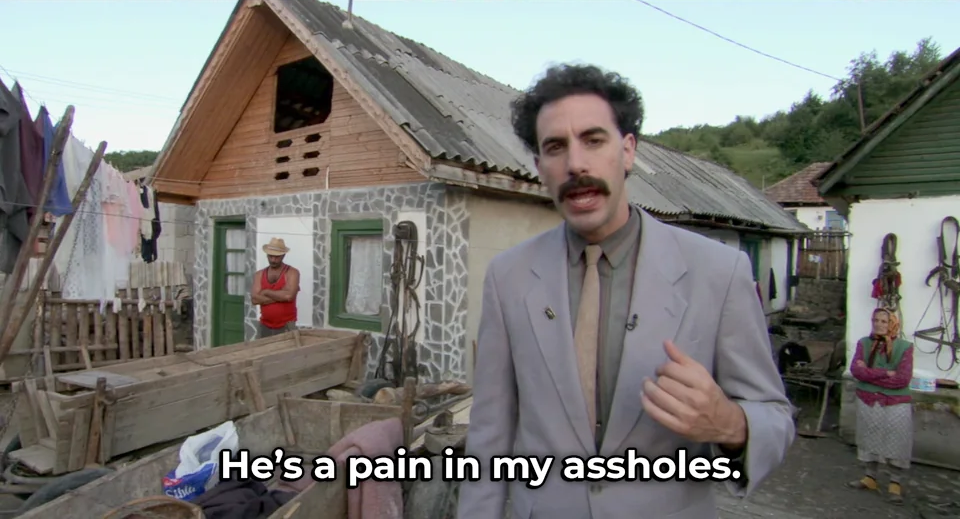

Scraping from NoxInfluencer and adding additional filters
Table of Contents
1. Intro
In this project I decressed the speed of which the employees of an influencer marketign gency takes gather potentionlly good youtubers to reach out.
In this project, I cut the time it takes for an influencer marketing agency to find a YouTuber to reach by six times.
I went from finding five good potential YouTubers per hour of searching to 30 per hour.
I made this project for a friend, if I am to describe him, I would say…

2. The situation
My friend worked for an influencer marketing agency as a freelancer. The task, that he forward to me, was to manually find a YouTuber to collaborate with that meet those criteria:
- The YouTuber Channel must be speaking in English
- The YouTuber Channel must live in either in Australia, Canada, UK, or USA.
- The YouTuber Channel must have at least 10,000 subscribers.
- The YouTuber Channel must not only produce music.
- The YouTuber Channels' content must not be meant for kids.
- The YouTuber Channel must talk during, almost, all the time in the video.
- Average videos views must be 10,000 views.
- Average videos' length must be 10 minutes.
- Average period between videos uploaded must be less than six months.
The business was using a platform called NoxInfluencer, where they can filter out YouTubers base on criteria number 1,2,3, and 4. The rest of the five criteria must be done manually.
When finding a channel that meet all criteria, it is required to manually copy some information about the YouTubers' Channel to a spreadsheet, this information was:
- Name
- URL
- Category/keyword
- Average views per video (in thousands)
- Email address (if it can be found from description and about me page)
- Number of videos
Example of the sheet:
| Name | URL | Category | AVG views K | Video count | |
|---|---|---|---|---|---|
| A Walk on the Wild Side | URL | VLOG Tourism Entertainment | 9 | 539 | |
| raimi reyes | URL | Life Style Beauty raimi | 9 | raimi@gleamfutures.com | 149 |
| elanna pecherle | URL | Beauty Makeup Film & Animation | 8 | jessica@collabagency.com | 593 |
| Milk Man Steve | URL | Gaming Action-adventure | 5 | oofgangfire@gmail.com | 94 |
3. Plan
- Gather all YouTubers' channels links from Noxinfluencer after adding the four basic filters.
- Gather all data from the last 20 videos using a library called Pytube (doesn't work anymore after YouTube updated their API).
- Reporting requirement: Email by analyzing the text in description and about me page.
- Criteria 4&5: Analyzing the description of each video for words such as short film, hip hop, ASMR, AMV, Fortnite, Minecraft, and Roblox.
- Criteria 6: Using two metrics I developed myself to helps determine if there is speech throughout the video.
- Narative score \[\text{Video natarive score}=\frac{\text{Subtitles' lenght}}{\text{Video durration}}\] \[\text{Channel natarive score}=\frac{\sum_{1^{st}\text{video}}^{20^{th}}\text{Video natarive score}}{20}\]
- Narative probability \[\text{Videos' narration}= 1 \text{ if auto-subtitle exist, else }0\] \[\text{Channel narative probability}=\frac{\sum_{1^{st}\text{video}}^{20^{th}}\text{Videos' narration}}{20}\]
- Narative score \[\text{Video natarive score}=\frac{\text{Subtitles' lenght}}{\text{Video durration}}\] \[\text{Channel natarive score}=\frac{\sum_{1^{st}\text{video}}^{20^{th}}\text{Video natarive score}}{20}\]
- Criteria 7: The average views from the last 20 videos.
- Criteria 8: The average video duration from the last 20 videos.
- Criteria 9: Wasn't possible due to the Google API limitation.
- Reporting requirement: Email by analyzing the text in description and about me page.
- Developing a score that prioritize channels for manual reviewes \[ Score=\frac{\log{_\text{video count}}* \log{\bar{x}_\text{views}}*\log{\bar{x}_\text{lengh}}*\log{_\text{Channel natarive score}}}{\log{_\text{subs}}} * P(\text{Worth}) * P(\text{Channel narative}) \]